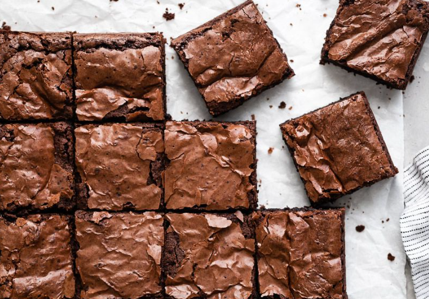

Brownie | |||
|  |
ingredientes |
||
PreparaciónColocar el chocolate a baño maría. Luego mezclar el azúcar con la manteca. Ir agregando los huevos de a uno. Agregar el chocolate ( no debe estar caliente). Mezclar la harina, la nuez picada y el polvo de hornear y luego agregarlo y mezclarlo en forma envolvente. Tiempo de cocción: De 15 a 20 minutos. Temperatura: 160 a 170 grados. |
|||